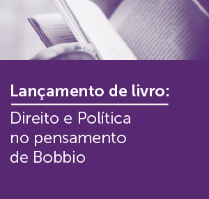

Participe dos nossos eventos!
-
Saúde e Nutrição
Para comemorar o Dia do Nutricionista, o curso organizou um evento para celebrar da melhor forma: produzindo e compartilhando conhecimento! O evento terá oficinas práticas presenciais com vagas limitadas, respeitando todos os protocolos de segurança nos laboratórios e palestras on-line transmitidas pelo YouTube.
-
Vórtex
A programação conta com debates, oficinas e mesas-redondas, todos on-line com transmissão pelo canal do CEUB no Youtube. Entre os convidados estão profissionais renomados que irão discutir sobre temas da atualidade, como realidade virtual, impressão 3D, inteligência artificial, automação, robótica, linguagem de programação e muito mais!
-
Sobre a Pandemia
Educar e conscientizar a juventude do DF sobre a gravidade da Covid-19. O evento online, em parceria ao movimento Jovens do DF Fazem Diferença com o CEUB, será focado na prevenção e na atual crise sanitária, e abordará temas como a aparição de novas cepas, que impactam, em grande parte, a população jovem e as possíveis psicopatologias decorrentes do isolamento, do alto índice de contágio da doença e de sintomas sociais.
-
Área de tecnologia
Os ataques de hackers a servidores do governo brasileiro, em novembro de 2020, levantaram um alerta para autoridades e gestores de instituições públicas e privadas. O possível comprometimento de informações pode resultar em danos relevantes, inclusive nas esferas jurídica e financeira.Para debater sobre a temática, convidamos especialistas que irão avaliar as repercussões e dar dicas sobre como se proteger contra ataques semelhantes.o
-
Transformação
EnCUCA – Transforme o mundo se divertindo. Levar soluções para transformar a sociedade é uma forma incrível de se divertir! Na 2ª edição do EnCUCA, você vai descobrir que pesquisar é muito mais legal do que você pensa.
-
Direito e Política
Nilson Mello lança seu segundo livro que traz o pensamento de Norberto Bobbio. O filósofo viveu na Itália, onde crescia o fascismo. Bobbio se notabilizou pela mediação e pelo diálogo entre os extremos, em um cenário de forte polarização que caracterizou a Europa e a Itália no pós-guerra.